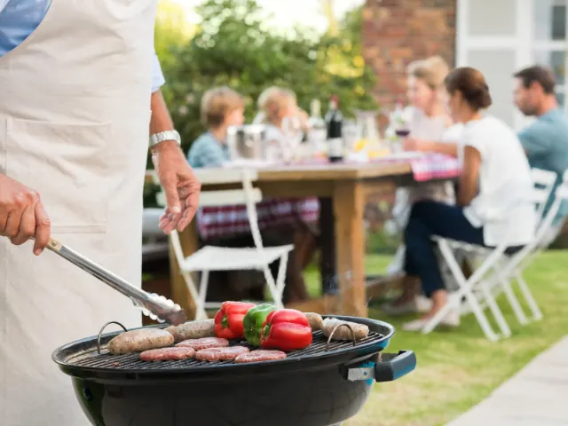

Partnerbijdrage
Dit heb je nodig voor de perfecte bbq met vlees en vis
Gepubliceerd op 19 september 2024

Ga je op korte termijn een keer een heerlijke barbecue organiseren voor je beste vrienden of familie? In dat geval pak je maar al te graag een keer goed uit. Misschien organiseer je een speciaal jubileum. Je krijgt een grote groep vrienden of familie over de vloer. Of je wilt tot laat in de avond gezellig borrelen. In alle gevallen ben je op zoek naar producten waarmee je zeker kunt zijn van de perfecte barbecue met vlees en vis. Waar je dan zoal aan moet denken, lees je in dit blog.
Het start allemaal met het kopen van de juiste soort producten
Een van de eerste dingen die je kunt doen? Dat is op zoek gaan naar een goede leverancier, bijvoorbeeld voor vis en bbq vlees bestellen. Na het grillen ben je zeker van een heerlijk product dat er ook nog eens fantastisch uitziet op het bord. Op het gebied van zowel vlees als vis is enorm veel om uit te kiezen, zodat er voor ieder wel wat wils is. En dat is natuurlijk wel zo fijn om te weten.
Denk goed na over de sausjes en bijgerechten
Heb je eenmaal goed voor jezelf in kaart gebracht wat voor soort vlees en vis je graag in huis haalt voor de barbecue? Dan is het ook een goed idee om ook eens na te denken over de bijgerechten waar je uit kunt kiezen. Want één ding is zeker, hier is vandaag de dag enorm veel in mogelijk. Je maakt de barbecue hierdoor helemaal compleet en je kunt er zeker van zijn dat je een avond lang heerlijk kunt tafelen.

Je gaat voor gemak door de beste producten online te bestellen
Kun je niet wachten om op korte termijn de leukste en lekkerste barbecue te gaan organiseren? Kies er dan voor om het vlees en de vis online te bestellen. Hierdoor laat je de basis van de barbecue bij jou aan huis leveren wanneer dat voor jou het beste uitkomt. En dat scheelt je meteen weer aardig wat tijd en uitzoekwerk. Weet je op dit moment al goed wat voor soort producten je het liefste in huis haalt voor je volgende barbecue? Misschien ga je dit jaar wel voor een goed gevuld en royaal vis bbq pakket, waar je vast en zeker de show mee gaat stelen bij jou in huis.